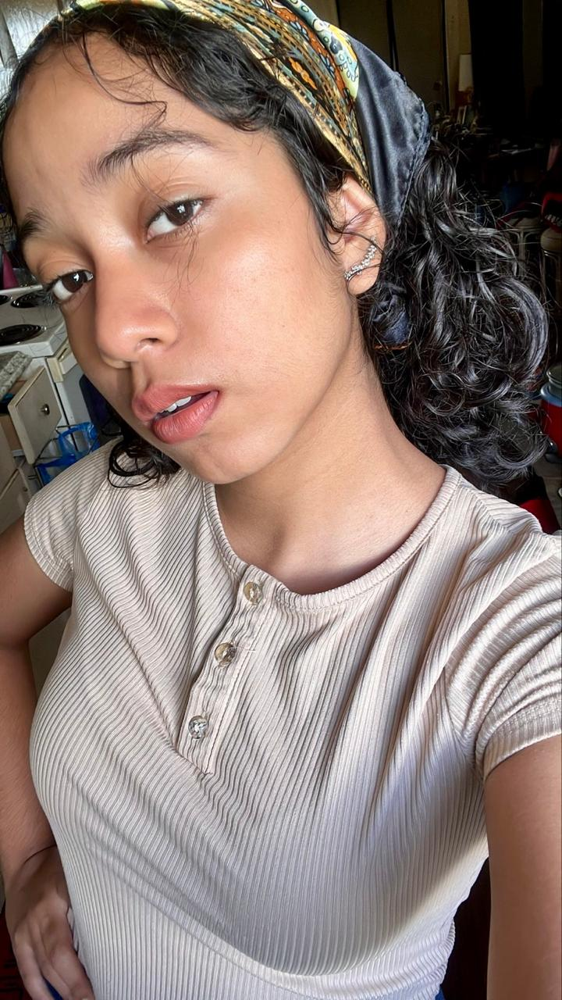
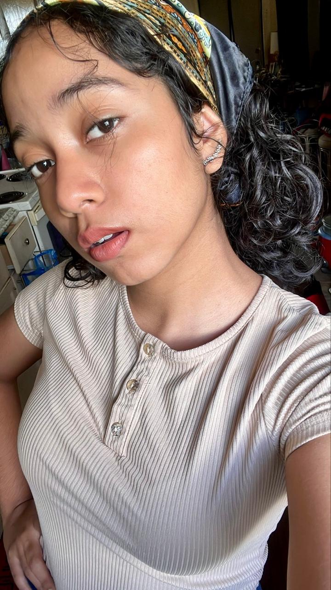
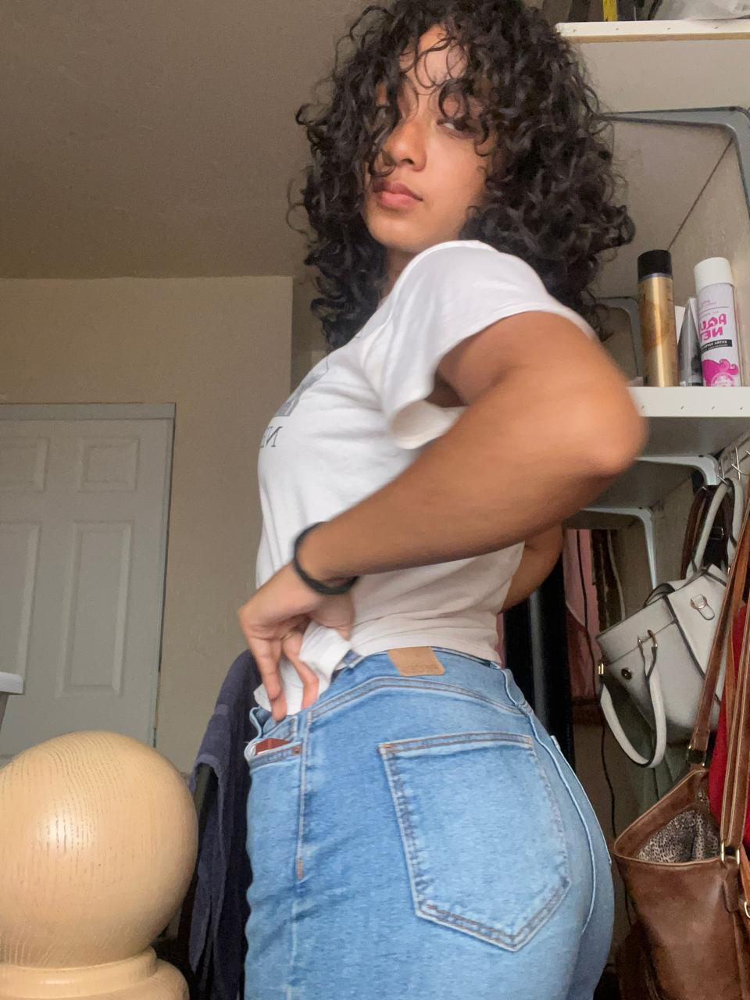
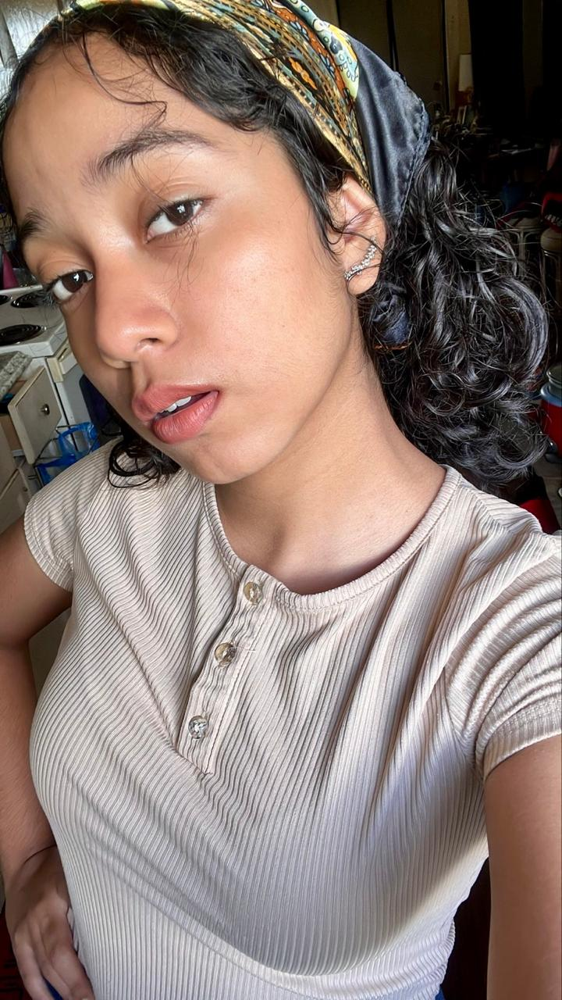
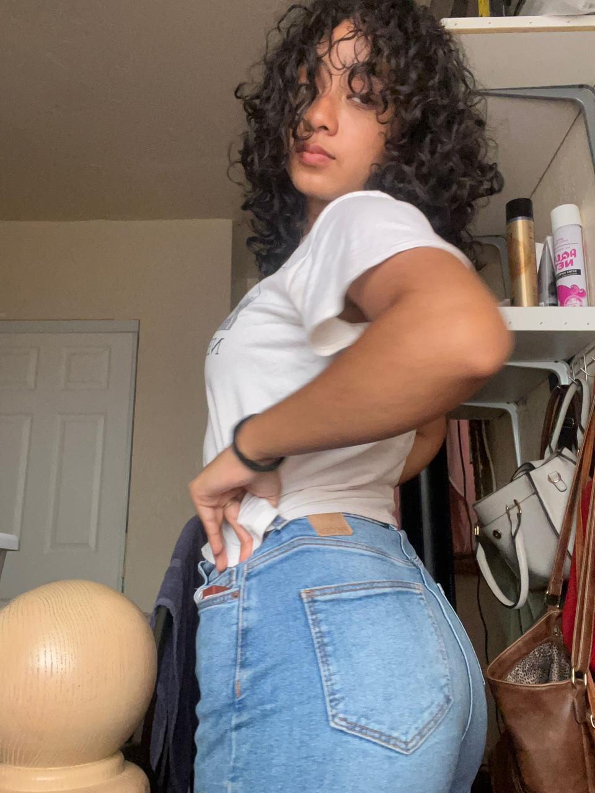
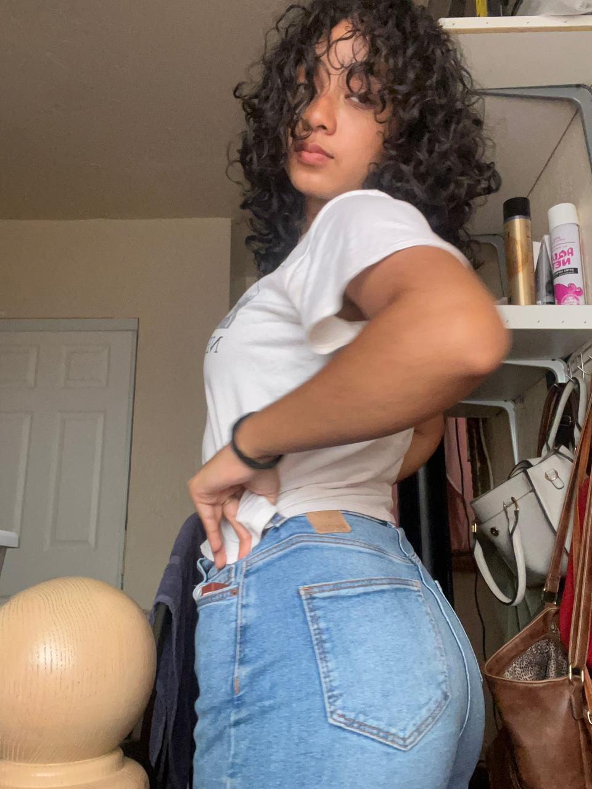
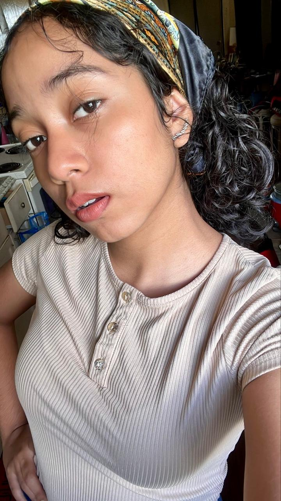
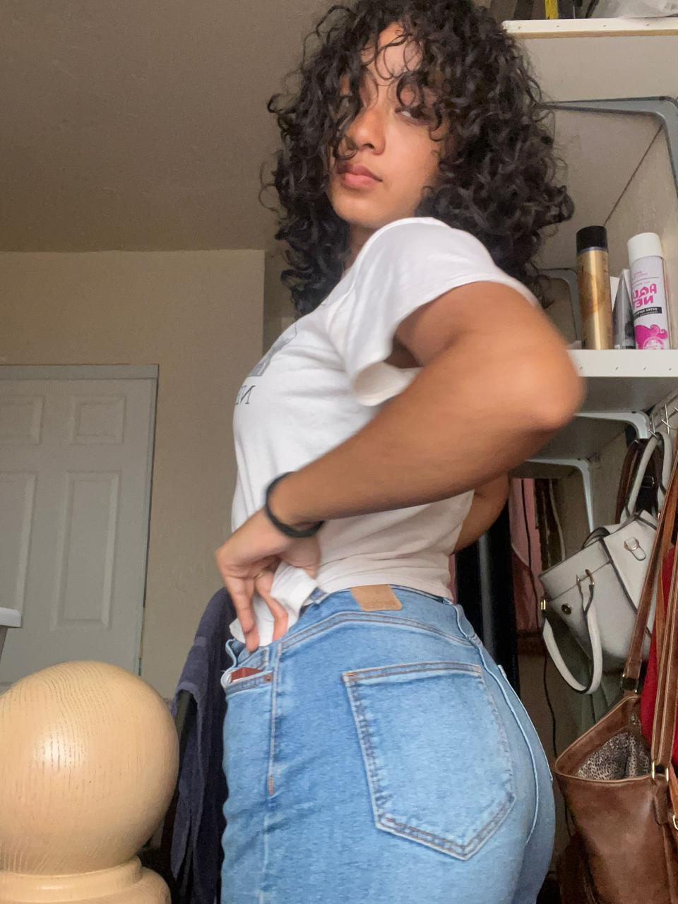

 





TE EXTRÑO HOY
TE EXTRAÑE EL MES PASADO
CREO QUE TE EXTRAÑERE TODA LA VIDA
PERO NO ME DIGAS QUE TE OLVIDE
NO ME OBLIGUES A YA NO PENSARTE
PORQUE EN MI MENTE
UN FUTURO NUESTRO SGUE EXISTIENDO